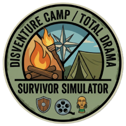

Cast

DC Franchise SimulatorConfigure your cast in Cast Builder and set up the season in Season Setup, then come back and click Initialize Season.
Simulate your season through the finale to see the final standings and jury vote here.